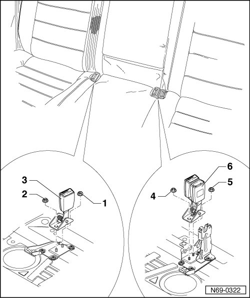

Rear Seat Belt Latches
Rear Seat Belt Latches
Removing
- Fold rear seat benches forward.
- Remove nuts - 1 - and - 2 - (50 Nm).
- Remove belt buckle - 3 - from body.
- Remove nuts - 4 - and - 5 - (50 Nm).
- Remove double buckle - 6 - from body.

Installing
- Perform the steps used for removal in reverse order.